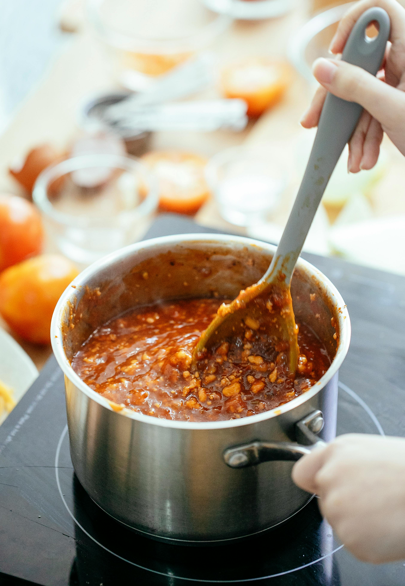

5-Ingredient Chili
Easy to Make!
Great For on the go Nights!

Ingredients
- 1 Pound Lean Ground Beef
- 1 (15-ounce can) Tomato Sauce
- 1 Can Kidney Beans, Drained
- 1 Can Chili Beans, Not Drained
- 2 Tablespoons Chili Powder, or to Taste
- Salt and Freshly Ground Black Pepper to Taste
Steps
- Heat a large skillet over medium-high heat.
- Cook and stir ground beef in the hot skillet until browned and crumbly, 5 to 7 minutes.
- Stir in kidney beans, chili beans, and tomato sauce.
- Bring to a boil and stir in chili powder.
- Reduce heat to a simer, and cook, stirring occasionally, until thickened, 15 minutes.
- Season to taste with salt and pepper.